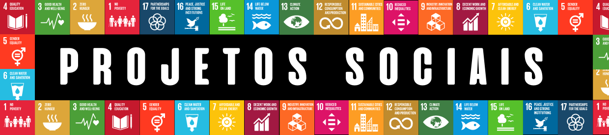
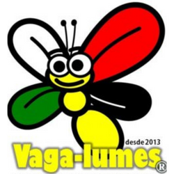
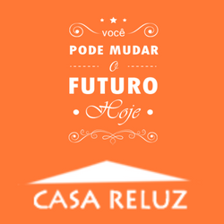
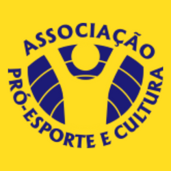

VemComigo.com

ONGs e PROJETOS SOCIAIS
Você sabe o que são ODS? As ODS são Os Objetivos de Desenvolvimento Sustentável é um apelo universal da Organização das Nações Unidas à ação para acabar com a pobreza, proteger o planeta e assegurar que todas as pessoas tenham paz e prosperidade.
Atualmente, existem 17 Objetivos de Desenvolvimento Sustentável (ODS) que foram estabelecidos pela Organização das Nações Unidas (ONU) em 2015 e compõem uma agenda mundial para a construção e implementação de políticas públicas que visam guiar a humanidade até 2030.
E para esses objetivos se realizarem as ongs fazem esses trabalhos, essa contribuição. Você sabe o que são ONGs? Ongs são organizações não governamentais, são entidades privadas da sociedade civil, sem fins lucrativos, cujo propósito é defender e promover uma causa política.
A ONGs promovem suas atividades através do voluntariado e são encontradas em setores como as políticas públicas, defesa do meio ambiente, saúde, educação, etc. E você pode fazer parte disso, logo abaixo você encrontrará projetos incríveis que contribuem muito para o mundo, e que ajudam na realização das ODS.
Então está esperando o que? Participe desse movimento!

PROJETO VAGALUMES
O “Projeto Vaga-lumes – Levando a Verdadeira Luz” atua como parceiro na formação do caráter do cidadão do futuro oferecendo atividades suplementares ao currículo básico de formação escolar em um ambiente saudável de respeito as crianças e adolescentes.
NOSSA VISÃO: Sermos referência positiva em nosso entorno capacitando pessoas a conseguirem o equilíbrio físico, social e espiritual e desta forma serem participantes na construção de uma sociedade mais justa.
NOSSA MISSÃO:Levar esperança, paz e amor aos necessitados através de atividades socioculturais e assistenciais.
NOSSOS VALORES:, Excelência, Disciplina, Dedicação e Resiliência.
Site oficial

CASA RELUZ
OBJETIVOS: Viabilizar o Serviço de Convivência e Fortalecimento de Vínculos para Crianças e Adolescentes de ambos os sexos, com idade de 06 a 15 anos residentes na Região Noroeste do Município de Ribeirão Preto. Fortalecendo a função da família e contribuindo na melhoria da sua qualidade de vida.
PÚBLICO-ALVO: atuamos com crianças e adolescentes de 06 a 15 anos de idade, moradoras da região noroeste de Ribeirão Preto – SP, nessa localidade existem várias favelas tais como Favela da Coca Cola, Rio Pardo, Grilo, SBT. As crianças moradoras dessas comunidades são beneficiadas em nosso projeto social. As crianças e adolescentes inscritos atendem os requisitos socioeconômicos determinados pela Instituição e para permanecerem no projeto devem ter bom comportamento, disciplina, respeito, estar regularmente matriculado na escola.
SERVIÇOS: oferecemos uniforme e lanche para todas as crianças e adolescentes (50 inscritos), nossos serviços são 100% gratuitos. Realizamos mensalmente reuniões com as famílias e promovemos diversos eventos de caráter social para toda a comunidade, tais como bazar de roupas usadas dentre outros.
Site oficial

PROESPORTE
Só em 2017 atendemos mais de 1200 crianças de mais de 50 escolas, porém n ossos objetivos são maiores que nossos recursos. Queremos atender mais crianças a cada ano. Por isso precisamos de sua ajuda. Seja um doador recorrente e contribua para o desenvolvimento de centenas de crianças todos os anos.
NOSSA MISSÃO: Promover o desenvolvimento de pessoas em situação de vulnerabilidade social por meio do esporte e da cultura
Site oficial